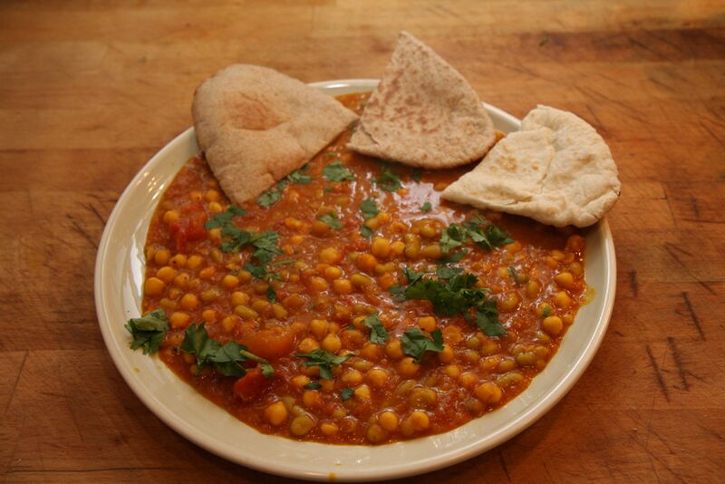

From the moment it begins to cook, chickpea curry fills the kitchen with an irresistible, warm aroma. The sizzle of onions, garlic, and ginger gives way to the fragrant bloom of toasted spices, promising a dish rich in complexity. Visually, it's a vibrant spectacle of deep orange and reddish-brown hues, studded with plump, golden chickpeas and often flecked with fresh green cilantro. The first spoonful reveals a delightful contrast in textures: the creamy, yielding chickpeas against a luscious, slightly chunky sauce. The taste is a layered experience—an initial savory warmth from the spices, followed by a tangy brightness from tomatoes, and a satisfying, earthy finish from the chickpeas themselves.
Heat oil or ghee in a kadai or a deep pan over medium heat. Once hot, add the cumin seeds and the optional bay leaf. Let them splutter for about 30 seconds until fragrant.
Add the finely chopped onions and sauté until they become soft, translucent, and start to turn golden brown. This usually takes about 7-8 minutes.
Add the ginger-garlic paste and the slit green chilies. Sauté for another minute until the raw smell disappears. Then, pour in the tomato purée.
Stir in the turmeric powder, red chili powder, coriander powder, and cumin powder. Mix everything together well.
Cook this onion-tomato-spice mixture on medium-low heat, stirring occasionally. Continue cooking until the masala thickens and you see the oil starting to separate from the sides of the pan. This is a crucial step and can take about 8-10 minutes. A well-cooked masala is the key to a flavourful curry.
Add the drained and rinsed chickpeas to the pan along with salt. Stir gently for a couple of minutes to coat the chickpeas thoroughly with the masala.
Pour in about 1 to 1.5 cups of warm water (use less for a thicker gravy, more for a thinner one). Bring the curry to a boil. Once boiling, reduce the heat to low, cover the pan, and let it simmer for at least 10-15 minutes. This allows the chickpeas to absorb all the flavours. For a thicker gravy, you can lightly mash a few chickpeas with the back of your spoon against the side of the pan.
Turn off the heat. Stir in the garam masala, dry mango powder (if using), and most of the chopped fresh coriander.
Let the curry rest for 5-10 minutes before serving, as this enhances the flavour. Just before serving, stir in the fresh lemon juice. Garnish with the remaining fresh coriander. It tastes best served hot with bhature, naan, roti, or steamed basmati rice.